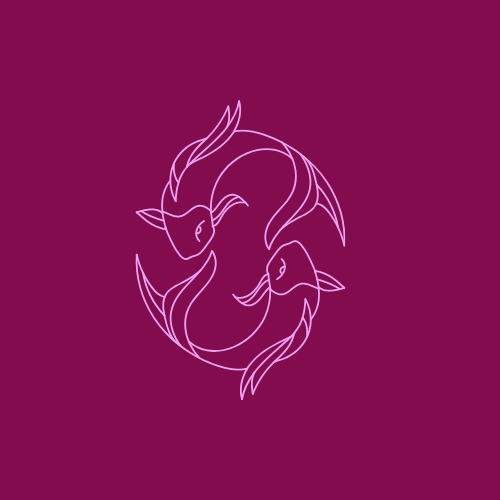

Signos de agua
Los cuatro elementos son los componentes más básicos de la astrología y representan las energías más primitivas. Presentes en la mayoría de las culturas, se los asocia al ser humano en sus distintos aspectos: el Fuego simboliza el cuerpo vital o etérico, la Tierra al cuerpo físico, el Agua al cuerpo emocional o “astral” y, finalmente, el Aire al cuerpo mental.
Los empáticos: Las personas agua se caracterizan por aportar amor, protección, vida, sensibilidad y empatía. Además, el agua se caracteriza por purificar, limpiar, dar vida y devolver la paz. Por tal razón, estas personas se identifican con eso.

Piscis (23 Febrero-02 Marzo)
Es el último signo del zodiaco, precisamente por eso, es el más rico y complejo de todos. Sensible ante el sufrimiento de los demás, responde con buena voluntad y ganas de ayudar. No le gusta sentirse preso y ni respeta las convenciones, así, por las buenas, aunque tampoco tiende a luchar contra lo establecido, sencillamente, discurre por otro lado. tienden a vivir de una manera emocional más que racional, de forma instintiva e intuitiva más que de forma lógica. Les cuesta mucho transmitir lo que perciben, no saben expresarlo con palabras sino con acciones... Una clave para los Piscis es cómo contactan con su sensibilidad.